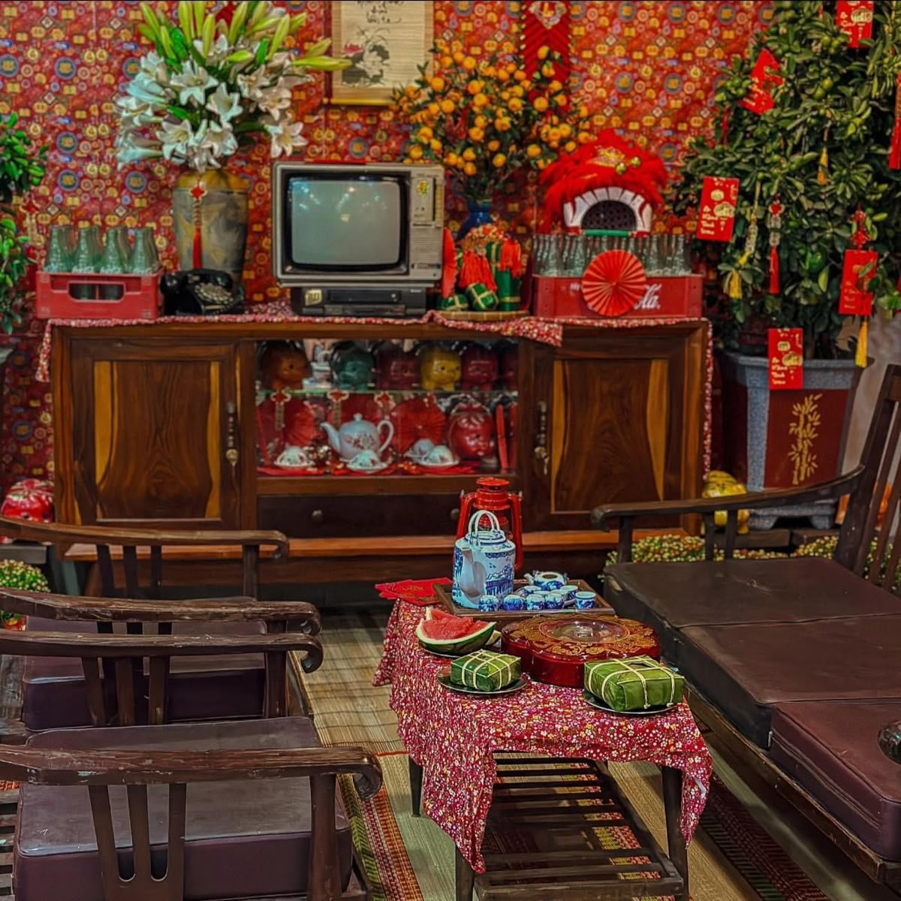
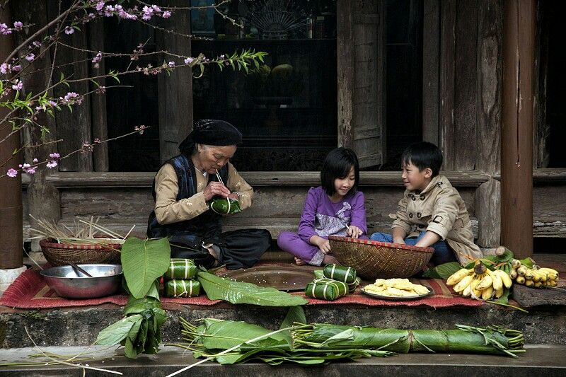

Tết Nguyên Đán là thời khắc quan trọng nhất trong năm, đánh dấu sự chuyển giao giữa năm cũ và năm mới. Trước thềm Tết, từ thành thị đến nông thôn, dễ dàng bắt gặp hình ảnh các gia đình tất bật quét dọn sân vườn, lau bàn thờ, giặt rèm cửa, sắp xếp lại đồ đạc. Dù cuộc sống hiện đại có nhiều thay đổi, phong tục dọn nhà trước Tết vẫn được duy trì như một nét đẹp văn hóa không thể thiếu.
Với người Việt, ngôi nhà không chỉ là nơi ở mà còn là không gian gắn bó với tổ tiên, gia đình và ký ức. Vì vậy, việc làm sạch và làm mới ngôi nhà trước Tết mang ý nghĩa chuẩn bị chu đáo để đón năm mới trọn vẹn, đủ đầy và bình an.
Một trong những lý do quan trọng nhất khiến người Việt dọn nhà trước Tết là quan niệm “tống cựu nghinh tân” tiễn cái cũ, đón cái mới. Năm cũ với những lo toan, vất vả, buồn phiền được xem như đã khép lại. Việc quét dọn, bỏ đi những đồ vật cũ hỏng, không còn sử dụng tượng trưng cho việc gạt bỏ điều không may mắn, xui rủi.
Ngôi nhà sạch sẽ, gọn gàng được tin rằng sẽ tạo điều kiện để vận may, tài lộc và những điều tốt đẹp ghé thăm trong năm mới. Đây là niềm tin mang tính tinh thần, nhưng lại có sức ảnh hưởng mạnh mẽ đến đời sống văn hóa của người Việt từ xưa đến nay.
Dọn nhà trước Tết thường không phải công việc của riêng một người mà là hoạt động chung của cả gia đình. Người lớn phân công, trẻ nhỏ phụ giúp những việc vừa sức như lau bàn, xếp đồ, quét nhà. Qua đó, các thành viên có cơ hội trò chuyện, chia sẻ và gắn kết với nhau nhiều hơn sau một năm bận rộn.
Phong tục này cũng mang ý nghĩa giáo dục sâu sắc. Trẻ em học được tinh thần trách nhiệm, sự chăm chỉ và ý thức giữ gìn không gian sống. Những ký ức về việc cùng cha mẹ dọn nhà, chờ đợi Tết đến thường trở thành kỷ niệm đẹp theo suốt tuổi thơ của nhiều người Việt.
Ngày nay, nhịp sống nhanh khiến nhiều gia đình không còn đủ thời gian để tự tay dọn dẹp toàn bộ nhà cửa. Các dịch vụ vệ sinh nhà cửa dịp cuối năm vì thế ngày càng phổ biến. Tuy hình thức có thay đổi, nhưng bản chất của việc dọn nhà trước Tết vẫn không hề mất đi.
Dù thuê dịch vụ hay tự làm, người Việt vẫn giữ quan niệm rằng nhà cửa phải sạch sẽ, tinh tươm trước thời khắc giao thừa. Điều này cho thấy phong tục dọn nhà trước Tết không chỉ là thói quen mà đã trở thành một phần trong đời sống tinh thần, khó có thể thay thế.
Thực tế, dọn nhà trước Tết không đơn thuần là lau chùi vật chất, mà còn là quá trình “dọn dẹp” cảm xúc và suy nghĩ. Khi sắp xếp lại không gian sống, nhiều người cũng tự nhìn lại một năm đã qua, bỏ lại những điều chưa trọn vẹn và nuôi dưỡng hy vọng cho năm mới.
Chính vì vậy, dù xã hội có thay đổi ra sao, phong tục dọn nhà trước Tết Nguyên Đán vẫn được người Việt trân trọng và duy trì. Đó là sự kết hợp hài hòa giữa văn hóa, tâm linh và nhu cầu tinh thần, tạo nên nét đẹp rất riêng của Tết Việt. Mỗi lần quét dọn, người Việt không chỉ làm sạch ngôi nhà, mà còn chuẩn bị cho mình một tâm thế an yên để bước sang năm mới với nhiều hy vọng và niềm tin.
Nguồn: https://tieudung.giadinhonline.vn/vi-sao-nguoi-viet-thuong-don-nha-truoc-tet-nguyen-dan-d12182.html
Nguồn video: VTC1
Những ngày giáp Tết, chợ và siêu thị trở nên nhộn nhịp vì ai cũng đi mua sắm. Người ta chuẩn bị bánh mứt, trái cây, thực phẩm và quần áo mới. Việc mua sắm giúp gia đình có sự chuẩn bị đầy đủ để đón năm mới sung túc, đủ đầy.

Nguồn video: Chuyển động 24h
Gia đình Việt thường quây quần gói bánh chưng hoặc bánh tét và làm các món ăn đặc trưng ngày Tết. Mâm cơm ngày Tết không chỉ ngon mà còn thể hiện sự biết ơn đối với tổ tiên. Đây cũng là dịp để các thành viên gắn kết với nhau hơn.
Nguồn video: Phát thanh Phú Thọ
Vào ngày 23 tháng Chạp, nhiều gia đình làm lễ tiễn ông Công ông Táo về trời. Mâm cúng được chuẩn bị trang trọng với mong muốn gia đình bình an và làm ăn thuận lợi. Đây là phong tục truyền thống lâu đời của người Việt.

Nguồn video: Vietnam Plus
Dù làm ăn xa đến đâu, nhiều người vẫn cố gắng trở về quê hương trước Tết. Bữa cơm tất niên và khoảnh khắc giao thừa là thời điểm thiêng liêng nhất. Tết vì thế không chỉ là ngày lễ mà còn là dịp đoàn viên đầy ý nghĩa.

Nguồn video: Phạm Cảnh